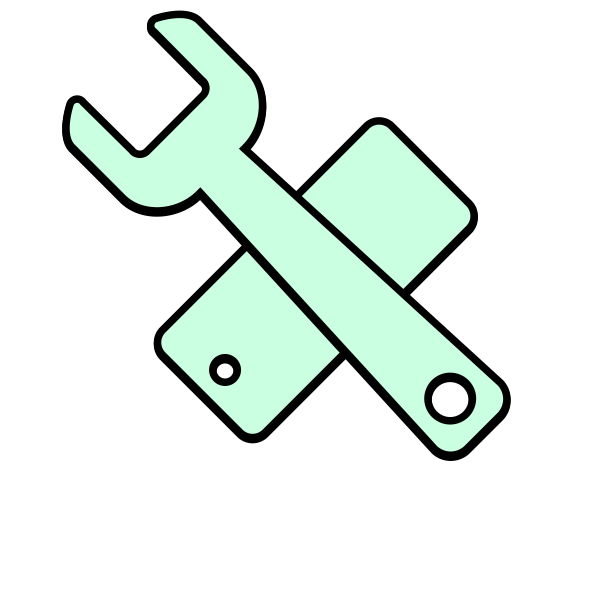

←
AVOIDING THE BRICK
workshops

What values and methodologies do modders share?
1/Computational luxuryAccording to the Cambridge dictionary, luxury is “something expensive that is pleasant to have but is not necessary”. Luxury is a driving force because for many people it represents one of the keys to positioning themselves in a higher social class. In many areas, luxury manifests itself as experiential luxury, related to the design of goods. In technology, luxury can be seen as an overabundance of computing power and is conveyed through data and lists of specs.
2/Explorative playfulness - FeaturesThis phase of the modding was focused on investigating the potential of the software by exploring its more technical aspects. Testing the limits of the working environment allows us to set the boundaries between what is possible and how far we are from implementing certain concepts in the interface.
3/Explorative playfulness - AestheticsWith the design project I intend to reflect on the practice of modding through an online workshop. The object of investigation is the interface, which is the medium that contains all the contradictions between the closed, market-driven software and the open, experimental, and independent one. The workshop takes into account a collective brainstorming phase to focus on users' ideals and needs. With an approach of explorative playfulness, not unlike the modders, we will try to translate participants' concepts into features to be implemented in the interface.
This publication resulted from research conducted
as part of the individual thesis project in the master
department Information Design at
Design Academy Eindhoven, The Netherlands
April 2023
Tutors
Simon Davies
Anna Engelhardt
Marco Ferrari
Silvio Lorusso
Gert Staal
Irene Stracuzzi
A project by Marco Pagan